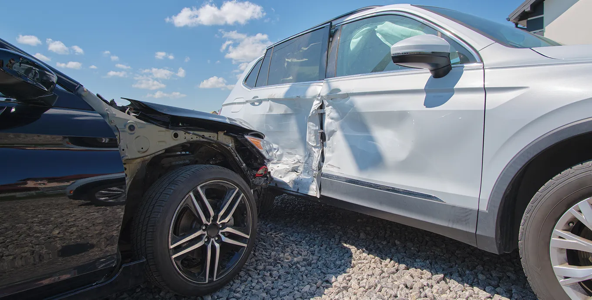

Навигация по странице:
Что делать если украли документы?
Кража
Если вы потеряли паспорт или вас обокрали, сохраняйте спокойствие и действуйте быстро по инструкции.
-
1
Напишите заявление в полицию
Если вы обнаружили, что у вас украли или вы потеряли документ, который удостоверяет личность, необходимо отправиться в полицейский участок и заполнить заявление.
Очень важно сделать это быстро, чтобы избежать штрафа (от 2 500 до 5 000 рублей) или депортации.
Если у вас остался хотя бы один из документов, который подтверждает личность, например, разрешение на временное проживание или вид на жительство, то обращайтесь в ближайшее к вам отделение полиции или то, в котором вы вставали на миграционный учет.
Для поиска удобно использовать сайты и приложения — 2ГИС или Яндекс карты.
В заявлении нужно будет перечислить все украденные или потерянные документы, а также описать обстоятельства, при которых все произошло. После этого вам должны выдать справку о том, что вы написали заявление об утере/хищении документов.
-
2
Отправляйтесь в консульство вашей страны
Когда справка будет у вас на руках, нужно обратиться в консульство, чтобы получить свидетельство о возвращении. Со свидетельством о возвращении у вас есть 10 дней для того, чтобы вернуться в свою страну и получить новый паспорт.
Найти адрес консульства вы сможете здесь.
Пропажа миграционной карты
В случае потери, порчи или кражи менее важного, чем паспорт, документа, например, миграционной карты, все гораздо проще. Необходимо обратиться в отделение полиции и написать заявление. В течение трех дней вы получите дубликат документа, который имеет полную юридическую силу.
Важно помнить, что если у вас не осталось ни одного документа, который подтверждает личность, то вам сразу необходимо обратиться в консульство вашей страны.
Пропажа банковской карты
При потере или краже банковских карт их необходимо срочно заблокировать через онлайн-приложение на вашем смартфоне или позвонить в службу поддержки банка. Телефон службы поддержки банка вы сможете найти на официальном сайте банка или в онлайн-приложении. Своевременная блокировка не позволит злоумышленникам воспользоваться вашей картой. После блокировки вы сможете заказать новую карту, а также получить деньги со своего счета в ближайшем отделении банка.
Пропажа наличных денег
Если же вы потеряли наличные или подозреваете, что деньги у вас украли, вам необходимо лично прийти в ближайший отдел полиции с заявлением или написать электронное обращение на сайте министерства внутренних дел Российской Федерации МВД РФ. Также, в этом случае, можно позвонить по номеру «112» и сообщить о ситуации.
Меры предосторожности:
- Будьте осторожны в местах большого скопления людей. Сумку или рюкзак необходимо держать перед собой, а мобильный телефон убрать из карманов верхней одежды в более надежное место. Таким образом, вы сможете избежать карманной кражи.
- Не носите с собой крупную сумму денег.
Действия в опасных для жизни и здоровья ситуациях
К сожалению, в городе не обходится без ситуаций угрозы вам и вашему здоровью. Рассмотрим несколько таких примеров и наиболее верных сценариев поведения в каждой из них. Под угрозой здоровью и жизни может подразумеваться следующее:
- Вы стали жертвой или свидетелем насилия.
- Вам необходимо оказать экстренную медицинскую помощь.
- Вас укусил клещ.
Вы стали жертвой или свидетелем насилия
Если вы стали жертвой насилия, например пострадали от нападения, необходимо успокоиться и предпринять следующие действия для того, чтобы защитить свои права и получить компенсацию за причиненный ущерб:
Во время праздника в России принято общаться с другими гостями, участвовать в играх и конкурсах, танцевать и петь песни, есть и пить за здоровье именинника. Общепринято произносить поздравления и тосты за успехи, благополучие и исполнение желаний.
-
1
Обратиться в медицинское учреждение или вызвать службу скорой помощи. Медицинские работники оформят справку о полученных травмах и окажут необходимую помощь.
-
2
По возможности сделать фото или видео полученных травм. Такие фотографии и записи могут пригодиться в суде.
-
3
Собрать свидетельские показания. Если у происшествия были свидетели, попросите их предоставить письменные доказательства и контактные данные.
-
4
Обратиться в полицию для составления протокола. Для этого будут необходимы все имеющиеся доказательства инцидента — справка, фото и свидетельские показания.
-
5
Подать исковое заявление в районный суд. Этот документ должен содержать в себе все факты о произошедшем случае: доказательства нападения и требуемую компенсацию за причиненный ущерб.
Бесплатная юридическая помощь
В экстремальных обстоятельствах важно помнить, что у вас всегда есть возможность обратиться к профессиональным юристам, которые помогут грамотно оформить все необходимые документы для возможного обращения в суд и смогут сопровождать весь процесс дела от начала и до конца.
Консультация психолога
Если вам тяжело пережить данную ситуацию, обратитесь к психологу. Он поможет преодолеть тревожное состояние и вернуться к нормальной жизни с наименьшими потерями для вашего психического здоровья.
Вы стали свидетелем насилия над другим человеком
Необходимо сообщить об этом в полицию для быстрого начала расследования. Сфотографировать или заснять на видео и предоставить свидетельские показания. Если в сложившейся ситуации вы не чувствуете себя в безопасности и вашей жизни может что-то угрожать, вы имеете право сообщить о происшествии анонимно или обратиться в полицию с просьбой предоставить вам защиту.
Меры предосторожности:
- Не вступайте в контакт с незнакомыми, подозрительными людьми.
- Если вы запланировали поход в развлекательное место, идите в компании друзей или людей, которые вам хорошо знакомы.
- Избегайте прогулок в темное время суток, лучше воспользоваться услугами такси.
Как оказывать первую помощь пострадавшим
ЧитатьЕсли вы заметили клеща на своем теле необходимо предпринять следующие действия:
-
1
Немедленно удалите клеща, используйте пинцет. Постарайтесь схватить клеща как можно ближе к коже и медленно вытянуть его. Избегайте крутящих движений, потому что это может привести к тому, что часть насекомого останется под кожей.
-
2
После удаления обработайте место укуса антисептиком. Используйте перекись водорода, йод или специальное антисептическое средство для очистки раны.
-
3
Сохраните удаленного клеща в плотно закрытом контейнере и сдайте в ближайший пункт серопрофилактики для анализа и идентификации возможных инфекций.
-
4
В течение нескольких дней врач сообщит вам результаты обследования и, если клещ был инфицирован, вам назначат необходимое лечение.
Меры предосторожности:
- Не стоит ходить по траве или среди кустарников — это могут быть места скопления опасных насекомых.
- Рекомендуется носить одежду, которая закрывает тело.
- Используйте специальные репелленты и регулярно проверяйте открытые участки тела во время и после прогулок на природе.
- Заранее позаботьтесь о бесплатной медицинской страховке.
Осторожно: мошенники!
Если говорить о праве на свободу и личную неприкосновенность, то каждый иностранец в России имеет право на жизнь, неприкосновенность частной жизни, личную и семейную тайну, защиту своей чести и доброго имени, право на свободу и личную неприкосновенность и право свободно передвигаться по территории РФ.
Посягательством на ваши права и свободу может стать вторжение в вашу частную жизнь телефонных мошенников.
Если вам позвонили мошенники
В современном мире телефонные мошенники стали одной из самых распространенных угроз для наших финансов и личной безопасности. Они используют различные методы обмана, чтобы выманивать деньги или личную информацию у своих жертв. Независимо от того, являетесь ли вы опытным пользователем телефона или новичком, необходимо знать о том, как действуют эти мошенники и как с ними бороться.
Первое, что следует понять, это то, что телефонные мошенники обладают хорошими коммуникативными навыками и способностью манипулировать людьми. Многие из них притворяются представителями банков, компаний по продаже товаров или государственных организаций и просят жертву предоставить свой пароль или номер кредитной карты для проверки данных. Другие используют тактику запугивания или создания чрезмерного чувства срочности для достижения своих целей.
Как защитить себя от мошенников?
Важно быть внимательным и осторожным при разговоре по телефону. Никогда не предоставляйте такую личную информацию, как пароли или номера кредитных карт по телефону. Помните, что банки и компании не запрашивают подобную информацию через телефонные звонки. Если вы сомневаетесь в подлинности звонка, завершите его и свяжитесь с организацией самостоятельно по известным контактам для проверки. Будьте осмотрительными и доверяйте своей интуиции — это может помочь вам избежать попадания в ловушку мошенников.
Меры предосторожности:
- Все операции с кредитными картами и денежными переводами необходимо осуществлять только через официальные платежные сервисы и приложения банков.
- Не сообщайте третьим лицам данные своей кредитной карты и другую информацию, которая касается ваших финансовых и личных документов.

Простые инструкции при пожаре, наводнении и землетрясении
Наиболее распространенными в России природными катаклизмами являются: пожар, наводнение, землетрясение
Если случилось наводнение
В результате сильных ливней или весеннего половодья рек иногда возможны локальные наводнения.
Если вы оказались в зоне риска затопления, включите телевизор или радиоприемник, чтобы не пропустить важную информацию и, при необходимости, следовать инструкциям.
В наиболее критических ситуациях необходимо выехать в назначенный службами спасения безопасный участок местности до момента, пока ситуация не нормализуется.
Меры предосторожности:
- Если ваш дом находится в зоне затопления, перенесите материальные ценности и имущество в безопасное место, например, на чердак.
- Выключите все электрические приборы и газ.
- Соберите необходимые личные вещи, на случай временной эвакуации.
Если случилось землетрясение
Россия подвержена землетрясениям в меньшей степени, чем некоторые другие регионы мира. Большинство землетрясений происходит в отдаленных и таких малонаселенных регионах, как Камчатка, Курильские острова и Сахалин. Однако, если вы оказались в опасной зоне, следует помнить о нескольких правилах:
- Если вы находитесь в здании, следуйте инструкциям по эвакуации.
- Если вы находитесь на улице, найдите естественное укрытие, например, в дверном проеме или за углом здания.
- Сохраняйте спокойствие, паника может привести к неверным действиям.
- Не подходите к поврежденным зданиям и не входите в них.
- Помните о том, что могут случиться повторные толчки, наиболее опасными считаются первые два-три часа после землетрясения.
- Не пользуйтесь лифтом.
Меры предосторожности:
Не подходите к поврежденным зданиям и не входите в них. Помните о том, что могут случиться повторные толчки, наиболее опасными считаются первые два-три часа после землетрясения. Не пользуйтесь лифтом.
МЧС России
Перейти на сайтЧто делать, если вы попали в ДТП или стали его свидетелем?
Современный ритм жизни в городах России очень высок, с каждым годом повышается количество автомобилей и участников дорожного движения. Дорожно-транспортные происшествия (ДТП), к сожалению, неизбежны, но, если следовать правилам, можно избежать путаницы и стресса в возникшей ситуации.
-
1
Оставайтесь на месте происшествия и не покидайте место аварии.
-
2
Сообщите о происшествии в полицию по телефону «102» или «112».
-
3
Если есть пострадавшие, окажите им помощь и вызовите скорую помощь.
-
4
По возможности, сделайте фотографии и видеозаписи места происшествия, а также запишите показания свидетелей и их контакты.
Меры предосторожности:
Если вы водитель:
Соблюдайте правила дорожного движения. Соблюдайте дистанцию с другими транспортными средствами. Не превышайте скорость. Будьте внимательнее на пешеходных переходах.
Если вы пешеход:
Переходите дорогу только в специально отведенных для этого местах. Будьте внимательны на пешеходных переходах. Ходите только по тротуарам или пешеходным дорожкам.
Мы рассмотрели самые вероятные экстренные ситуации, которые могут случиться и привели примеры эффективных действий. Эта информация поможет вам последовательно действовать в критических обстоятельствах и соблюдать меры предосторожности, чтобы они не произошли. Если Вы попали в экстренную ситуацию, сохраняйте спокойствие, следуйте правилам, которые описаны выше, и помните, что вы всегда можете позвонить по единому, бесплатному номеру экстренной службы — «112».